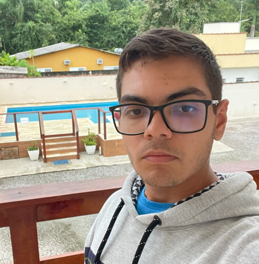
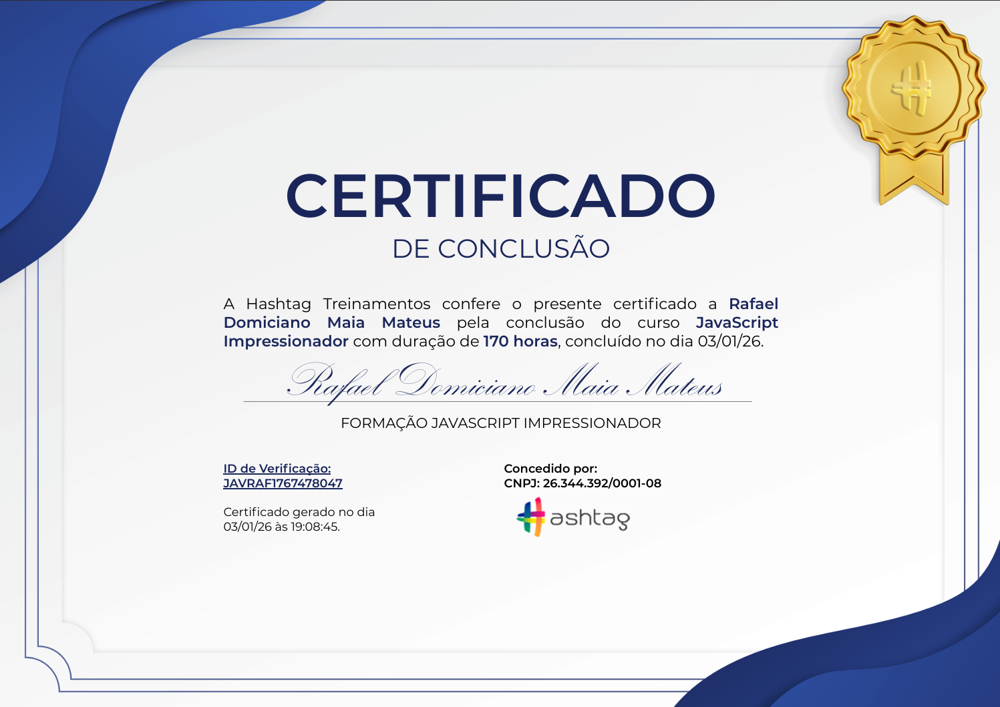
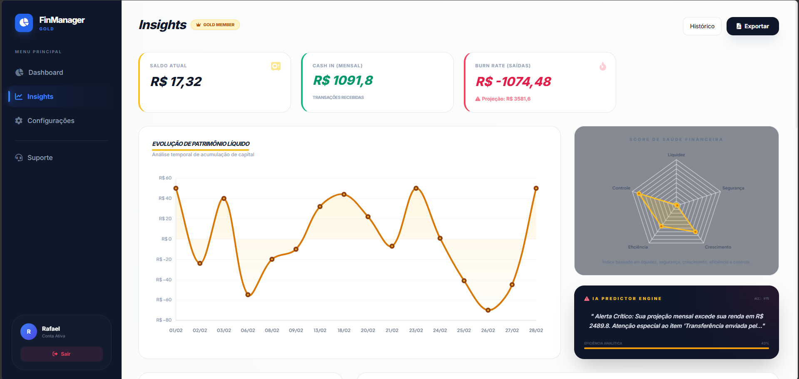
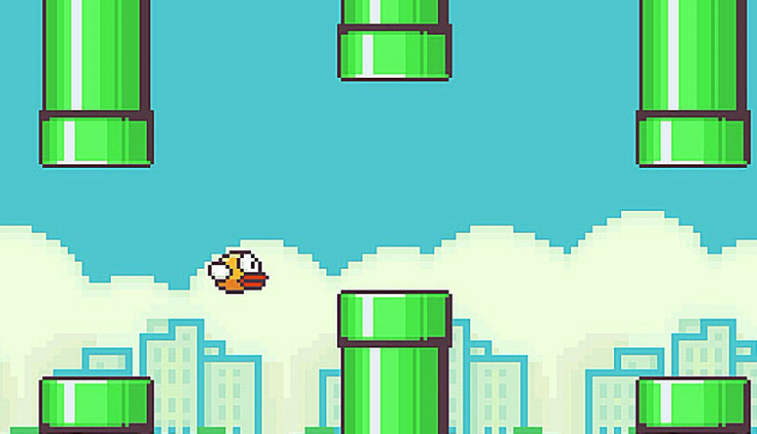

Rafael Domiciano Maia Mateus
Desenvolvedor Backend

Desenvolvedor Backend
Olá, meu nome é Rafael. Sou desenvolvedor Backend, com foco em Django (Python) e Express (Node.js) para a criação de APIs REST e sistemas web. Tenho interesse em desenvolver aplicações bem estruturadas, seguras e eficientes, sempre priorizando boas práticas e organização do código. Estou em constante evolução, buscando aprimorar meus conhecimentos em arquitetura de software, bancos de dados e integração entre sistemas, além de consolidar minha experiência com versionamento usando Git e GitHub. Gosto de aprender na prática e de enfrentar desafios que me permitam evoluir como desenvolvedor. Acredito que um bom backend é aquele que garante estabilidade e confiabilidade para toda a aplicação, mesmo sem estar diretamente visível para o usuário final.
Certificado de conclusão em Python, com foco nos fundamentos da linguagem, lógica de programação e boas práticas de desenvolvimento.
Código de verificação: PYTRAF1726100980
Validar certificado →
Certificado de conclusão em JavaScript, abordando fundamentos da linguagem, manipulação do DOM e lógica de programação.
Código de verificação: JAVRAF1767478047
Validar certificado →
Um sistema de gestão financeira pessoal desenvolvido com Django, com foco em simplicidade, segurança e visual moderno. O projeto ainda está em desenvolvimento, mas já possui estrutura organizada para futuras funcionalidades como controle de gastos, gráficos interativos, login seguro e funcionalidades financeiras mais avançadas (planejadas).
mais... Ver no GitHub →
Um jogo clássico inspirado no Flappy Bird, desenvolvido em Python utilizando a biblioteca Pygame. O projeto tem como foco a prática de lógica de programação, manipulação de eventos, colisões e controle de animações, além de reforçar conceitos fundamentais do desenvolvimento de jogos 2D de forma simples e didática.
mais... Ver no GitHub →Projeto desenvolvido para o Chalés São Mateus, com foco em apresentação visual, organização de informações e experiência do usuário. O site utiliza HTML, CSS e JavaScript para criar uma interface moderna, responsiva e intuitiva, servindo como base para divulgação do empreendimento e futuras expansões do projeto.
mais... Ver no GitHub →